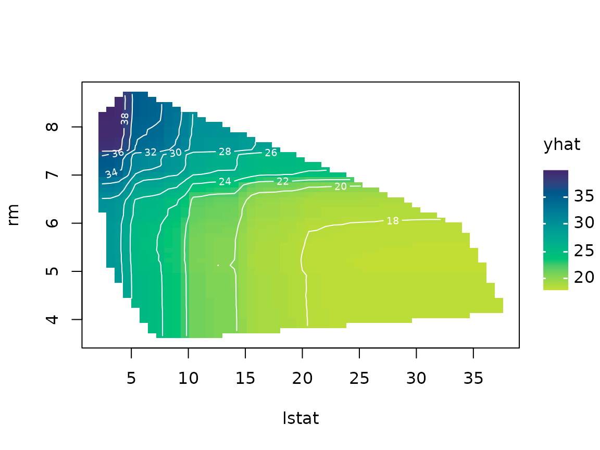
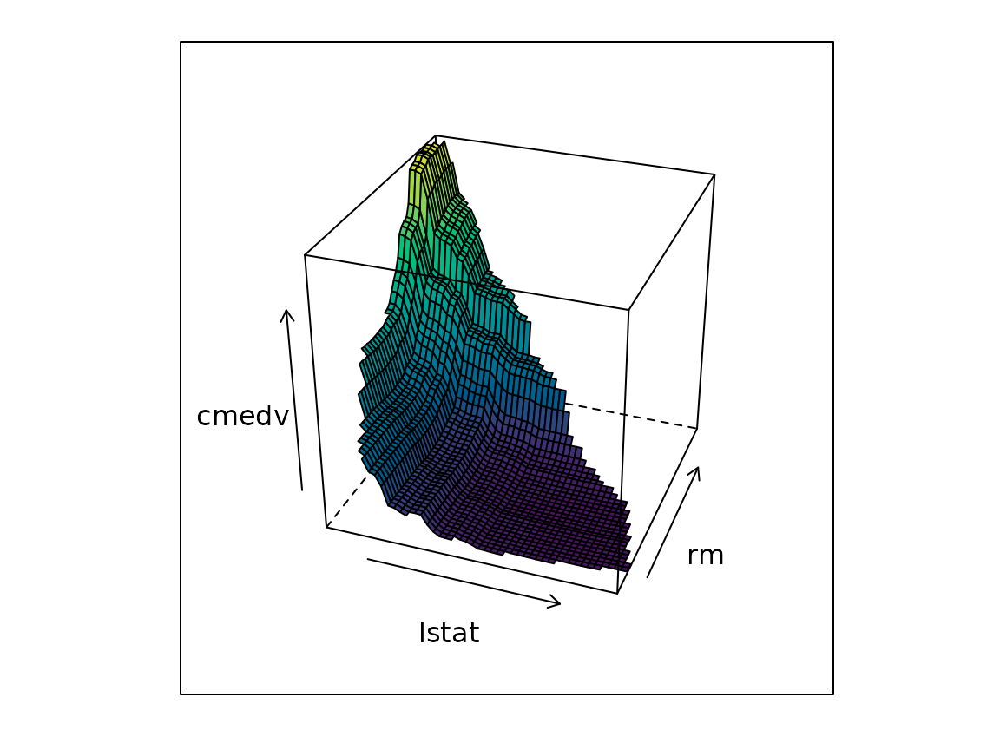
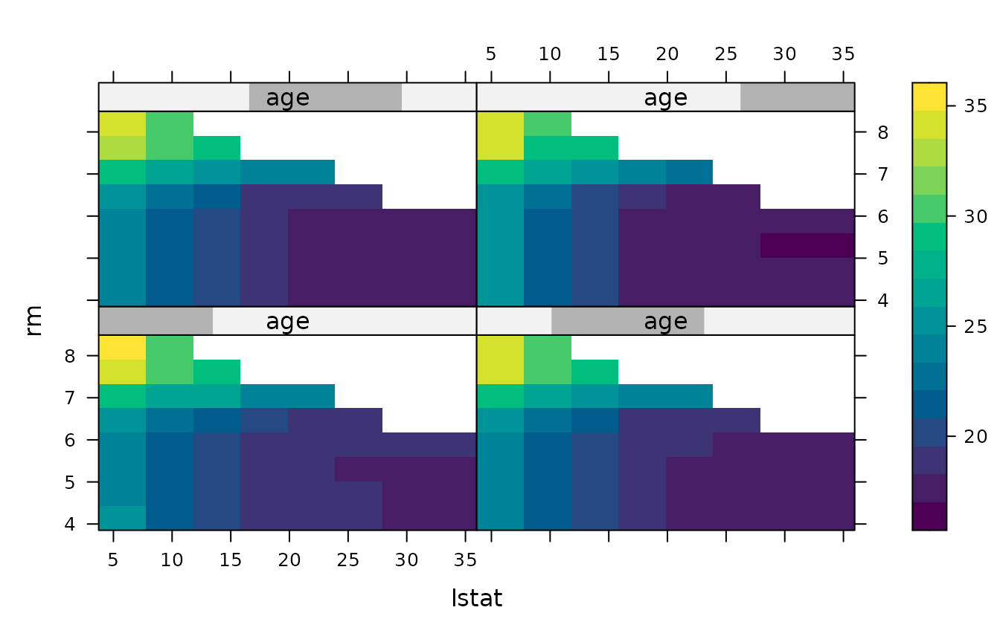

Complex machine learning models (e.g., random forests and gradient
boosted trees) often predict well but are hard to interpret. Partial
dependence plots (PDPs) help visualize the relationship between a
subset of the features (typically 1–3) and the response while accounting
for the average effect of the other predictors in the model. The
pdp package provides partial(), a general
function for computing partial dependence from a wide variety of fitted
model objects, along with simple plotting methods.
Installation
pdp is hosted on r-universe:
# Install from r-universe (recommended):
install.packages("pdp", repos = c("https://bgreenwell.r-universe.dev",
"https://cloud.r-project.org"))
# Install the latest development version from GitHub:
pak::pak("bgreenwell/pdp")A first example
We’ll use the Boston housing data (included with
pdp) and a random forest. The partial()
function needs (at minimum) a fitted model and the name of the predictor
of interest. It’s good practice to also supply the original training
data via the train argument.
library(pdp)
library(randomForest)
data(boston) # load the (corrected) Boston housing data
set.seed(101) # for reproducibility
boston.rf <- randomForest(cmedv ~ ., data = boston, ntree = 250)
# Partial dependence of cmedv on lstat
pd <- partial(boston.rf, pred.var = "lstat", train = boston)
head(pd)
#> lstat yhat
#> 1 1.7300 30.90476
#> 2 2.4548 30.90256
#> 3 3.1796 30.85973
#> 4 3.9044 30.39991
#> 5 4.6292 28.81125
#> 6 5.3540 26.90529By default partial() returns a data frame, which makes
it easy to plot with whatever graphics package you prefer.
pdp ships with a plot() method that draws
lightweight base R graphics via tinyplot by default, or
lattice
graphics whenever lattice = TRUE:
# tinyplot-based display; rug marks show the min/max and deciles of lstat to
# help avoid interpreting the plot where there's little data
plot(pd, rug = TRUE, train = boston)
# lattice-based equivalent
plot(pd, rug = TRUE, train = boston, lattice = TRUE)You can also let partial() plot directly by setting
plot = TRUE and choosing a plot.engine
("tinyplot", the default, or "lattice").
Two predictors
Partial dependence extends naturally to pairs of predictors (the plot becomes a false color level plot, i.e., heatmap):
pd2 <- partial(boston.rf, pred.var = c("lstat", "rm"), chull = TRUE,
train = boston)
plot(pd2, contour = TRUE)
Here chull = TRUE restricts the grid to the convex hull
of the training values of lstat and rm, which
reduces the risk of extrapolating outside the region of the data. Factor
predictors are handled automatically and result in faceted displays.
3-D surfaces and three predictors (lattice)
The lattice engine (lattice = TRUE) additionally
supports 3-D surfaces and paneled three-predictor displays, like the
figures in the R Journal
paper:
# 3-D surface instead of a false color level plot
plot(pd2, lattice = TRUE, levelplot = FALSE, zlab = "cmedv", drape = TRUE,
colorkey = FALSE, screen = list(z = -20, x = -60))
# Three predictors: the third is binned into overlapping intervals and used
# to panel the display (see the `number` and `overlap` arguments)
pd3 <- partial(boston.rf, pred.var = c("lstat", "rm", "age"),
grid.resolution = 10, chull = TRUE, batch.size = 1e6,
train = boston)
plot(pd3, lattice = TRUE)
Classification
For classification models, partial dependence is computed for the
predicted probability of the “focus” class (the first class, by default;
use which.class to change it) on the centered logit scale.
Set prob = TRUE to use the probability scale instead:
data(pima) # load the Pima Indians diabetes data
pima2 <- na.omit(pima)
set.seed(102)
pima.rf <- randomForest(diabetes ~ ., data = pima2, ntree = 250)
# Partial dependence of the probability of testing positive on glucose
partial(pima.rf, pred.var = "glucose", prob = TRUE, which.class = "pos",
plot = TRUE, rug = TRUE, train = pima2)Models with non-Gaussian responses
Some models make predictions on a transformed scale (e.g., Poisson
models often predict on the log scale). Use inv.link to
transform the predictions back to the response scale before the
partial dependence function is computed:
Controlling the grid
By default, partial() evaluates continuous predictors
over an equally spaced grid of (at most) 51 values spanning their range.
This can be controlled via:
-
grid.resolution— the number of equally spaced grid points; -
quantiles = TRUE— use sample quantiles (seeprobs) instead, which keeps the grid inside the bulk of the data; -
trim.outliers = TRUE— trim outliers before constructing the grid; -
pred.grid— supply the exact grid of values yourself.
partial(boston.rf, pred.var = "lstat", quantiles = TRUE, probs = 1:19/20,
plot = TRUE, train = boston)Learn more
-
vignette("ice-curves", package = "pdp")covers individual conditional expectation (ICE) curves and user-supplied prediction functions. -
vignette("faster-pdp", package = "pdp")covers options for speeding up the computations (e.g., batched predictions and parallel processing). - The R Journal article “pdp: An R Package for Constructing Partial Dependence Plots” provides a detailed introduction.